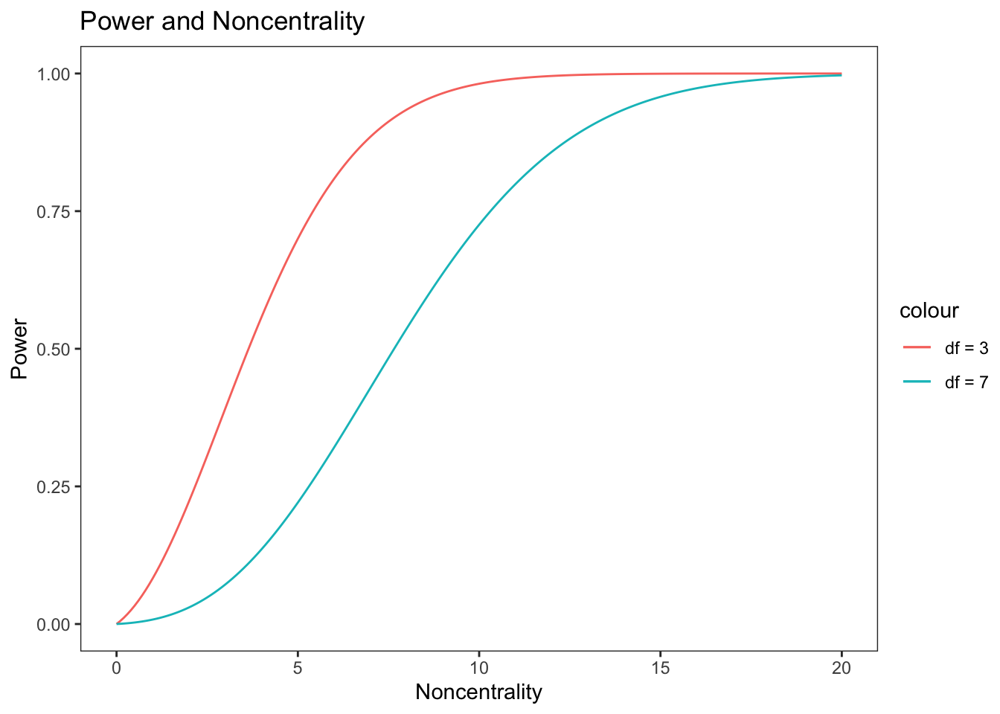
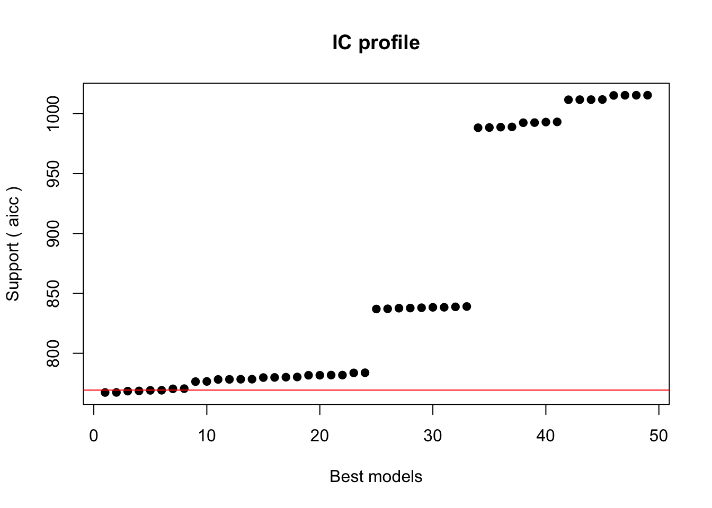
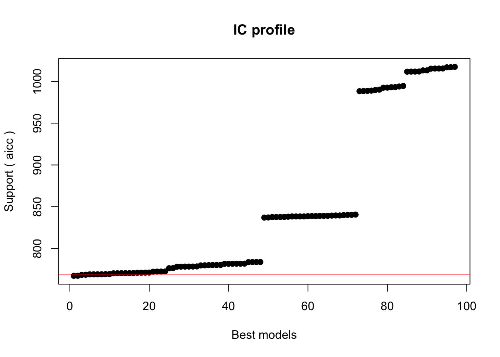
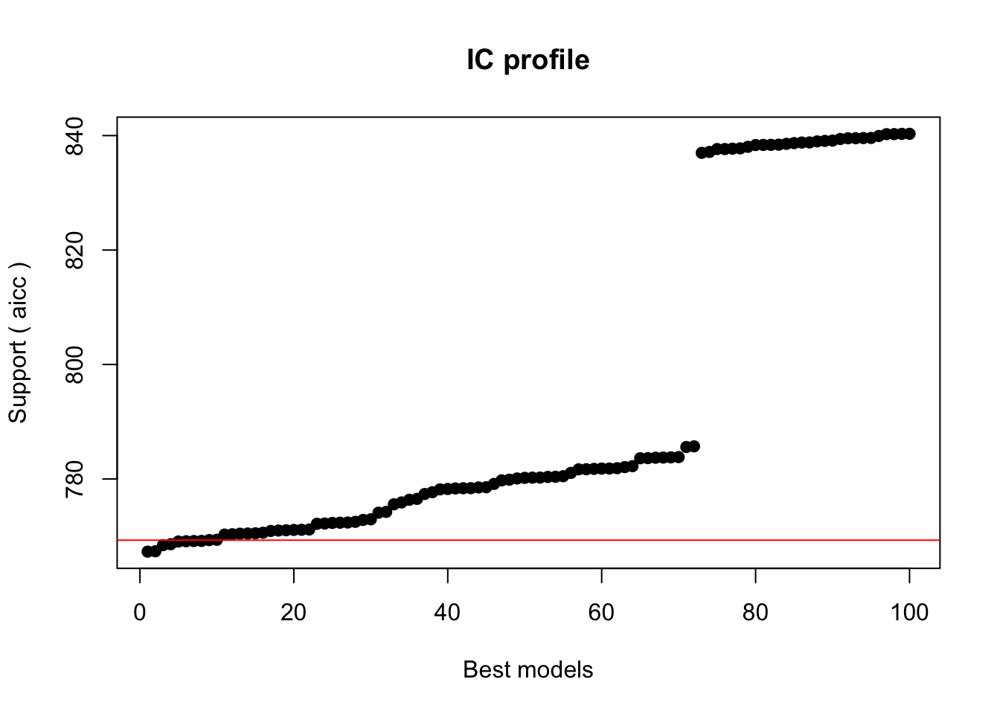
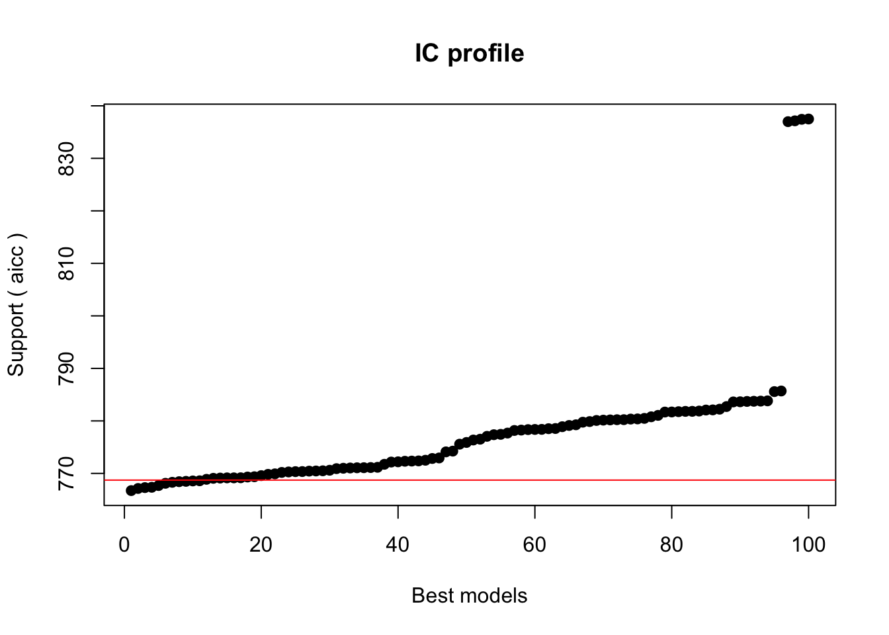
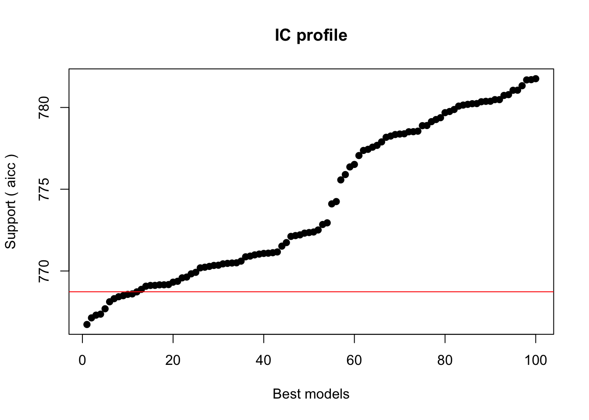
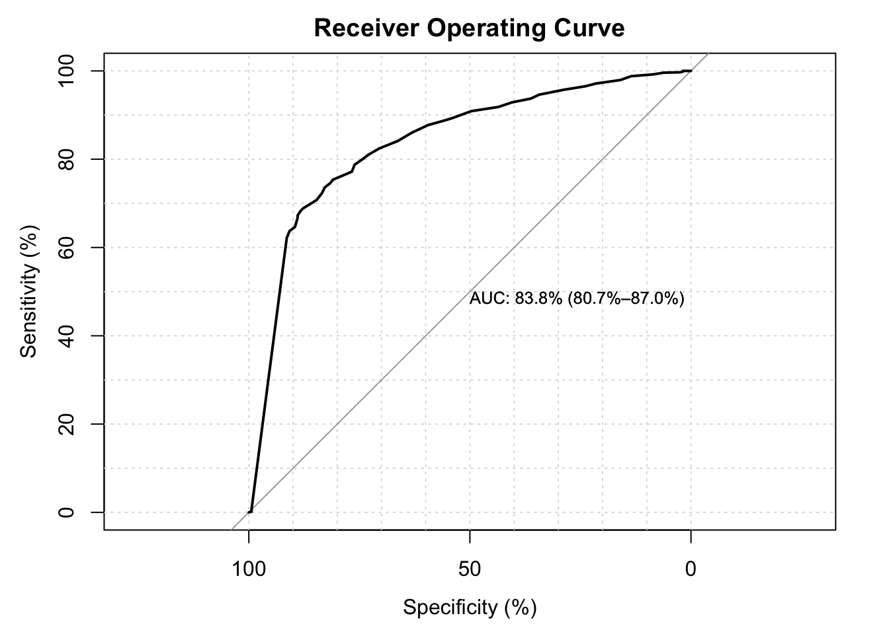
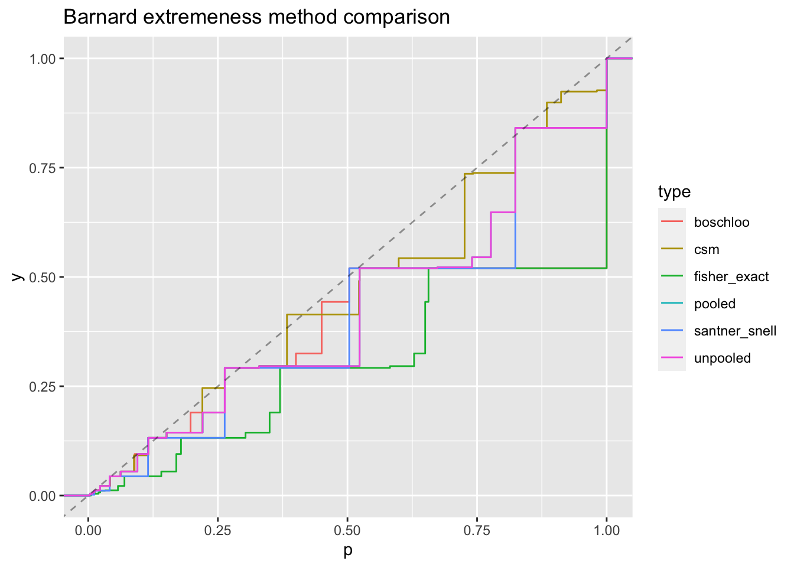

library(tidyverse)library(AMR)library(DescTools)library(kableExtra)library(VGAM)library(nnet)library(vcd) # visualizing categorical datalibrary(vcdExtra) # additional companion codelibrary(reshape2)library(coin)library(rlang)library(glmtoolbox)library(glmulti) # model averaging and model selectionlibrary(rms) # regression modeling strategies, residuals implements gof testslibrary(ResourceSelection)# devtools::install_github("https://github.com/cran/LogisticDx")library(LogisticDx)
5.1 Overview
This is a very broad area, but I feel like it’s also super confusing because it’s all very confouded in terms of all the chisq tests that are scattered throughout the place. I’m trying to organize everything for myself here.
CMH test
score test for table
Pearson
Yates (continuity correction of Pearson)
Barnard test (based on fixing 1 margin)
fisher exact (based on fixing all margins)
McNemar Test
Generalized CMH test
5.2 2x2 sampling mechanisms
The many different sampling mechanisms arise from different study designs, and are critical to the assumptions of the population you are studying.
In an epidemiological context, the data is given as
disease
no disease
exposure
a
b
n1
no exposure
c
d
n0
m1
m0
N
Poisson (nothing fixed)
Multinomial (N) total is fixed
“Cross Sectional” studies
Two-sample Binomial (1 margin fixed)
“Cohort Study” = n1, n0 fixed
“Case Control Study” = m1, m0 fixed
a type of “retrospective” study.
Hypergeometric (2 margins fixed)
very rarely the case in real experiments, but unfortunately many methods are based on this assumption for the 2x2 table.
# Independent Poisson#' When specifying the mean, they can be specified cellwise, or by table, grouped by the nrow*ncol, in order of the columns#'#' @param mean means of the cells. If 1 number, all cells will have same #'#' @return#' @export#'#' @examplesrpoisson_table <-function(num_tables =1, mean =5, nrow =2, ncol =2) { cells <-rpois(ncol * nrow * num_tables, lambda = mean) vec_table <-split(cells, gl(num_tables, ncol*nrow))vapply(vec_table, matrix, nrow = nrow, ncol = ncol, byrow =FALSE, FUN.VALUE =matrix(1:(ncol*nrow), nrow = nrow))}# 2x2 examplespoisson_table_examples <-rpoisson_table(5, mean =5, nrow =2, ncol =2)apply(poisson_table_examples,MARGIN =3,FUN = addmargins,simplify =FALSE)
$`1`
Sum
8 1 9
7 5 12
Sum 15 6 21
$`2`
Sum
4 6 10
2 9 11
Sum 6 15 21
$`3`
Sum
4 7 11
2 4 6
Sum 6 11 17
$`4`
Sum
2 7 9
5 4 9
Sum 7 11 18
$`5`
Sum
4 4 8
0 3 3
Sum 4 7 11
Code
# grand total fixedrmultinom_table <-function(num_tables =1, N =20, nrow =2, ncol =2, p =c(1, 1, 1, 1)) {stopifnot(length(p) == nrow * ncol)# p is internally standardized by rmultinom cells <-rmultinom(num_tables, N, p)dim(cells) <-c(nrow, ncol, num_tables) cells}
Code
# examplesmultinom_table_examples <-rmultinom_table(5, N =20, nrow =2, ncol =2, p =c(1, 1, 1, 1))apply(multinom_table_examples,MARGIN =3,FUN = addmargins,simplify =FALSE)
[[1]]
Sum
4 7 11
7 2 9
Sum 11 9 20
[[2]]
Sum
5 8 13
3 4 7
Sum 8 12 20
[[3]]
Sum
1 7 8
8 4 12
Sum 9 11 20
[[4]]
Sum
7 6 13
2 5 7
Sum 9 11 20
[[5]]
Sum
4 5 9
4 7 11
Sum 8 12 20
When not in the 2x2 case, this can also be called an independent multinomial. This is still a case in which one of the margins is fixed.
Code
# Sample a 2x2 tablerbinom_table <-function(num_tables =1, row_n =c(10, 10), p =c(.5, .5)) {vapply(1:num_tables, FUN =function(x) { a <-rbinom(length(row_n), row_n, p) # fix margins binom_table <-cbind(a, b = row_n-a) # make other column by subtraction and combinecolnames(binom_table) <-NULL binom_table}, FUN.VALUE =matrix(rep(1.1, 4), nrow =2)) # expected 2x2 table}binom_table_examples <-rbinom_table(5, row_n =c(10, 10), p =c(.5, .5))apply(binom_table_examples,MARGIN =3,FUN = addmargins,simplify =FALSE)
[[1]]
Sum
7 3 10
6 4 10
Sum 13 7 20
[[2]]
Sum
5 5 10
5 5 10
Sum 10 10 20
[[3]]
Sum
4 6 10
7 3 10
Sum 11 9 20
[[4]]
Sum
5 5 10
5 5 10
Sum 10 10 20
[[5]]
Sum
4 6 10
7 3 10
Sum 11 9 20
Code
# Fixed margins# one hypergeometrical deviate will determine the entire table.# only doing 2x2 tables with sampling methodrhyper_table <-function(num_tables, row_n =c(10, 10), col_n =c(10, 10)) { a <-rhyper(num_tables, row_n[1], row_n[2], col_n[1])vapply(a, FUN =function(x) { col1 <-c(x, col_n[1] - x) col2 <- row_n - col1 contingency_table <-cbind(col1, col2)colnames(contingency_table) <-NULL# get rid of column names contingency_table },FUN.VALUE =matrix(c(0, 0, 0, 1.1), nrow =2))}# exampleshyper_table_examples <-rhyper_table(num_tables =5, row_n =c(10, 10), col_n =c(10, 10))apply(hyper_table_examples,MARGIN =3,FUN = addmargins,simplify =FALSE)
[[1]]
Sum
4 6 10
6 4 10
Sum 10 10 20
[[2]]
Sum
4 6 10
6 4 10
Sum 10 10 20
[[3]]
Sum
3 7 10
7 3 10
Sum 10 10 20
[[4]]
Sum
5 5 10
5 5 10
Sum 10 10 20
[[5]]
Sum
5 5 10
5 5 10
Sum 10 10 20
5.3 Chi Squared Distribution
For testing, the lower the degree of freedom, the more power we have, so 1-df tests are generally good and powerful, but quite specific in the alternative that’s tested.
ncp <-seq(0, 20, .1)qplot(ncp, pchisq(3,ncp,lower.tail =FALSE), geom ="line", color ="df = 3") +geom_line(aes(x = ncp , y =pchisq(7, ncp, lower.tail =FALSE), color ="df = 7")) +labs(y ="Power",x ="Noncentrality",title ="Power and Noncentrality") +theme_test()

For the same noncentrality parameter, the distribution with lower df will have more power. We can compensate for different degrees of freedom with different noncentrality patterns. That is, a lower degree of freedom test will have more power as long as the noncentrality is the same. If the “model is not true” (the ncp is larger) we could still potentially have higher power. The motivation for this figure comes from the Cochran Trend Test.
5.4 Measures of Association
Given tables, it’s important to distinguish the properties of how to make comparisons, and summarize the information given. When dealing with percentages and ratios, it’s sometimes difficult to have an intuitive understanding of meaning on the percentage scale. The example Professor Guanhua Chen gives to stimulate you for this thinking is from cartalk:
RAY: Potatoes are 99 percent water and one percent what? Potato. So say you take a bunch of potatoes, like 100 pounds of potatoes and you set them out on your back porch to dry out. TOM: Yeah, when they are dry they should weigh about a pound. RAY: Well, we’re not drying out completely. And as the potatoes dry out the water begins to evaporate. And after a while, enough water has evaporated so that they are now 98 percent water. If you were to weigh those potatoes at that moment… TOM: They’d be lighter. RAY: Yes, how much lighter? That’s the question. Now you can solve this puzzler algebraically, and if you don’t solve it algebraically, you are going to get the wrong answer. TOM: Really? RAY: Really.What’s your answer, off the top of your head? TOM: 99 pounds. RAY: You are wrong. Answer: RAY: Now, unencumbered by the thought process as usual, my brother guessed 99 pounds. TOM: Yeah. RAY: Now, when I guessed, off the top of my head, I guessed about 90 pounds. TOM: ’Cause it just feels right. RAY: But if you do the math, 1 percent of 100 –which is what the potato is– is one pound. As we told you, that’s 1 percent. So 2 percent, when it’s 98 percent water, two percent of the new weight of the mass is still going to be equal to that one pound, and 2 percent of 50 pounds is a pound. So the potato weight is now 50 pounds, not 100.
Risk Ratio: p1 / p2
not symmetric
Odds Ratio ([p1/(1 -p1)] / [p2 / (1 - p2)])
symmetric, exposure gives information about disease and vice versa, meaning this is useful for
when the condition is RARE, odds ratio is similar to risk ratio and may permit interpretation as risk ratio. Should definitely be below p < .1
We’ll use the “Placekicking” Dataset from the textbook, as well as borrowing some of the code from placekicking.R for the analysis.
For all of the goodness of fits, we should work on the “aggregated data”. The textbooks refer to this as the exploratory variable pattern (EVP). The reason for this is so the approximation is closer to correct.
Initialization...
TASK: Exhaustive screening of candidate set.
Fitting...
After 50 models:
Best model: good~1+week+distance+change+PAT
Crit= 767.299644897567
Mean crit= 861.376317807727

After 100 models:
Best model: good~1+week+distance+change+PAT
Crit= 767.299644897567
Mean crit= 849.706367688597

After 150 models:
Best model: good~1+week+distance+change+PAT
Crit= 767.299644897567
Mean crit= 793.693748713112

After 200 models:
Best model: good~1+distance+change+PAT+wind
Crit= 766.728784139471
Mean crit= 777.754038353278

After 250 models:
Best model: good~1+distance+change+PAT+wind
Crit= 766.728784139471
Mean crit= 774.167191225549

Completed.
model aicc weights
1 good ~ 1 + distance + change + PAT + wind 766.7288 0.06695515
2 good ~ 1 + week + distance + change + PAT + wind 767.1329 0.05470419
3 good ~ 1 + week + distance + change + PAT 767.2996 0.05032956
4 good ~ 1 + distance + change + PAT 767.3607 0.04881733
5 good ~ 1 + distance + PAT + wind 767.6899 0.04140743
6 good ~ 1 + distance + change + PAT + type + wind 768.1182 0.03342523
We can look at the top models for model selection here, and find that df
# A tibble: 43 × 4
distance y n p
<int> <int> <int> <dbl>
1 18 2 3 0.667
2 19 7 7 1
3 20 776 789 0.984
4 21 19 20 0.95
5 22 12 14 0.857
6 23 26 27 0.963
7 24 7 7 1
8 25 12 13 0.923
9 26 8 9 0.889
10 27 24 29 0.828
# … with 33 more rows
# ℹ Use `print(n = ...)` to see more rows
Code
# unweighted logistic function by distanceplacekick_l <-glm(good ~ distance, data = placekick, family =binomial())summary(placekick_l)
Call:
glm(formula = good ~ distance, family = binomial(), data = placekick)
Deviance Residuals:
Min 1Q Median 3Q Max
-2.7441 0.2425 0.2425 0.3801 1.6092
Coefficients:
Estimate Std. Error z value Pr(>|z|)
(Intercept) 5.812080 0.326277 17.81 <2e-16 ***
distance -0.115027 0.008339 -13.79 <2e-16 ***
---
Signif. codes: 0 '***' 0.001 '**' 0.01 '*' 0.05 '.' 0.1 ' ' 1
(Dispersion parameter for binomial family taken to be 1)
Null deviance: 1013.43 on 1424 degrees of freedom
Residual deviance: 775.75 on 1423 degrees of freedom
AIC: 779.75
Number of Fisher Scoring iterations: 6
Code
# weighted logistic function by distanceplacekick_wl <-glm(y/n ~ distance, weights = n, family = binomial, data = placekick_bin_data)summary(placekick_wl)
Call:
glm(formula = y/n ~ distance, family = binomial, data = placekick_bin_data,
weights = n)
Deviance Residuals:
Min 1Q Median 3Q Max
-2.0373 -0.6449 -0.1424 0.5004 2.2758
Coefficients:
Estimate Std. Error z value Pr(>|z|)
(Intercept) 5.812080 0.326277 17.81 <2e-16 ***
distance -0.115027 0.008339 -13.79 <2e-16 ***
---
Signif. codes: 0 '***' 0.001 '**' 0.01 '*' 0.05 '.' 0.1 ' ' 1
(Dispersion parameter for binomial family taken to be 1)
Null deviance: 282.181 on 42 degrees of freedom
Residual deviance: 44.499 on 41 degrees of freedom
AIC: 148.46
Number of Fisher Scoring iterations: 5
5.5.1 Hosmer Lemeshow
Why is Hosmer Lemeshow different than just taking the pearson residuals, summing and testing on the error residual degrees of freedom?
The motivation for grouping the fitted values into groups, is so that the chisq approximation is “more correct”. The approximation/large sample deviation is only true when there are a fixed number of categories, and if we were to sample more values for x, we don’t get any new values. That is, assuming that every single residual in the sum has a standard normal error is not quite correct.
One downside of HL test, is that the cuts are done by predicted values. It’s possible we have very different covariate values that have similar predicted values, but they’re grouped together.
There are many ways to do a HLtest, but we’ll walk through them individually. Ultimately I recommend Desctools, or the one created by Prof. Bilder.
#' Hosmer-Lemeshow Goodness of Fit Test#' #' This method implements a few varieties of the popular Hosmer-Lemeshow Goodness of Fit Test, in which the null hypothesis is that the model is a good fit. The most widely used and implemented is splitting into 10 groups dependent on the quantiles of the data, and then summing pearson statistics across each of the groups. Here is a list of the different methods to calculate the Hosmer-Lemeshow (and related) statistics.#' #' 1. "deciles_unweighted"#' 2. "deciles_weighted"#' 3. "fixed"#' 4. "fixed_minmax"#' #' #' @param mod (glm-object) weighted, binomial glm model#' @param g (integer) number of groups#' @param fixed (logical) whether the categories used should be equally spaced between the min and max of predicted values#' @param adjust (logical) use Pigeon and Heyse correction to denominator of HL Statistic#' @param breaks (numeric) manual specification of the category groupings. Will include 0 and 1 as min/max.#' @param deciles (logical) calculate the statistic with the deciles of risk#'#' @return Hypothesis test for Goodness of Fit of Logistic Regression#' @export#'#' @examplesgof_hl <-function(mod, g =10, fixed =FALSE, adjust =FALSE, breaks =NULL) {# model object checkingif (!inherits(mod, "glm") |# glm mod$family$family !="binomial"|# binomial glm!("(weights)"%in%names(mod$model))) # weighted regression { rlang::abort(message ="Hosmer Lemeshow Test only implemented for weighted, binomial, glm objects.") } y_hat <-fitted(mod)if (!missing(breaks)) { # manually specified groups breaks <-unique(sort(c(0, breaks, 1)))if (max(breaks) >1|min(breaks) <0) { rlang::abort(message ="breaks should be between 0, 1") } method <-"Hosmer-Lemeshow GOF Test" } elseif (fixed) { # equally separated groups breaks <-seq(min(y_hat), max(y_hat), length.out = g +1) method <-"Hosmer-Lemeshow GOF fixed H Test" } else { breaks <-quantile(y_hat, 0:g/g) method <-"Hosmer-Lemeshow GOF C Test" } y_cut <-cut(y_hat, unique(breaks), include.lowest =TRUE) Mj <- mod$prior.weights y0 <- mod$y * Mj y1 <- Mj - y0 y0_exp <- y_hat * Mj y1_exp <- Mj - y0_exp# aggregate table cut_df <-tibble(y_cut, y0, y0_exp, y1, y1_exp, Mj) |>group_by(y_cut) |> dplyr::summarise(Y0 =sum(y0),Y0_exp =sum(y0_exp),Y1 =sum(y1),Y1_exp =sum(y1_exp),Ni =sum(Mj),pbar =weighted.mean(y1_exp/Mj, Mj),pbar_var =sum(Mj * y1_exp / Mj * (1- y1_exp/Mj)))if (adjust) {# Pigeon Heyse adjustment statistic_col <-with(cut_df, (Y1 - Ni * pbar)^2/ pbar_var) hl_table <- cut_df |>add_column(adj_pearson = statistic_col) method <-paste(method, " (Pigeon-Heyse Adjusted)") } else {# pearson statistic, unadjusted statistic_col <-with(cut_df, (Y0 - Y0_exp)^2/ Y0_exp + (Y1 - Y1_exp)^2/ Y1_exp) hl_table <- cut_df |>add_column(pearson = statistic_col) } nc <-length(breaks) -1# expected number of categoriesif (nrow(cut_df) < nc) { rlang::inform(message = glue::glue("Empty categories detected, setting g = {num_cat}. \n", num_cat =nrow(cut_df)), use_cli_format =TRUE) }# expected count warningif (any(hl_table$Y0_exp <5| hl_table$Y1_exp <5)) {# cat(hl_table$Y0_exp, Y1_exp) rlang::inform(message ="Groups with expected count < 5 detected, chi-squared approximation may not be valid. Consider decreasing number of groups `g`. \n", use_cli_format =TRUE) }# (adjusted) pearson statistic statistic <-sum(statistic_col)names(statistic) <-"X-squared" df <-nrow(cut_df) -2 p.value <-pchisq(statistic, df, lower.tail =FALSE)structure(list(statistic = statistic,parameter =c(df = df),p.value = p.value,data.name = mod$call$data,method = method,alternative ="Population is not a good fit for the assumed model.",table = hl_table |> dplyr::select(-pbar_var)),class ="htest")}# placekick_wl_hl0 <- gof_hl(placekick_wl, breaks = c(.48, .5, .7))# placekick_wl_hl0 <- gof_hl(placekick_wl, breaks = c(.1, .3, .6, .8))# placekick_wl_hl0 <- gof_hl(placekick_wl, fixed = TRUE, g = 5)# placekick_wl_hl0 <- gof_hl(placekick_wl, fixed = TRUE)# placekick_wl_hl0 <- gof_hl(placekick_wl, g = 50)placekick_wl_hl0 <-gof_hl(placekick_wl, fixed =FALSE, adjust =FALSE)
Groups with expected count < 5 detected, chi-squared approximation may not be
valid. Consider decreasing number of groups `g`.
Code
placekick_wl_hl0
Hosmer-Lemeshow GOF C Test
data: placekick_bin_data
X-squared = 11.028, df = 8, p-value = 0.2001
alternative hypothesis: Population is not a good fit for the assumed model.
These results match the implementation in Bilder’s HLTest,
This is the version in vcdExtra, but I think it’s incorrect for the aggregated model. The totals are not correct, and I don’t think the code accounts for the prior weights.
Error in cut.default(yhat, breaks = quantile(yhat, probs = seq(0, 1, 1/g)), :
'breaks' are not unique
Well, unfortunately the unaggregated version errors out because of the cut command is not unique. In this case, I think it would have worked for other datasets, but the deciles of risk overlap in this case.
Overall do not recommend this function, although there is fairly convenient table output.
I think this is the best one available I’ve found. This is the function provided by Dr. Bilder:
Code
placekick_wl_hl2 <-HLTest(placekick_wl, g =10)
Warning in HLTest(placekick_wl, g = 10): Some expected counts are less than 5.
Use smaller number of groups
Code
print(placekick_wl_hl2)
Hosmer and Lemeshow goodness-of-fit test with 10 bins
data: placekick_wl
X2 = 11.028, df = 8, p-value = 0.2001
This table is useful because it breaks down the statistic into the 10 groups used for the cuts. We should look at the table for large deviations. Although I would still like a function in which I can specify the cuts manually and evaluate the robustness of the HLtest.
This function seems like it’s doing as it should, but has an automatic way of calculating the number of groups without a way of modifying the number of groups used. Though it does look like the statistic is being calculated correctly from the code.
I don’t like this version becaues the group cuts are not displayed, and so diagnosing where the model fits and doesn’t fit is not very useful. It’s also an automatic selection, which makes it hard to test sensitivity.
The results of this test are also dramatically different than the HLTest. We would conclude that the logistic regression is not a good fit from this test, but from the other cuts, with 10 groups, we would conclude it’s an okay fit.
Code
placekick_wl_hl3 <- glmtoolbox::hltest(placekick_wl) # different, but I think it's because of the different cuts
Does not implement the weighted glm version. This version fixes the problem in vcdExtra in which for the raw model, we need to use “unique” quantiles, otherwise the cut function will not work with repeated values. Hence if you request g = 10 10 groups, you may only end up with 6 groups. This is fine, but now the df in the test is incorrect, and doesn’t adjust for the fact that g is lower now, and instead uses the df as you requested.
The conclusion from this test would be similar to the version by Dr. Bilder, and also gives the table of cuts, but also not recommended.
# not aggregated (still incorrect)placekick_wl_hl4 <- ResourceSelection::hoslem.test(placekick$good, fitted(placekick_l), g =10)print(placekick_wl_hl4)
Hosmer and Lemeshow goodness of fit (GOF) test
data: placekick$good, fitted(placekick_l)
X-squared = 10.943, df = 8, p-value = 0.2049
This package was taken off of CRAN, but has many of the binomial diagnostics implemented. There certainly are a lot of tests, but most are automatic unfortunatly. it would be helpful to review the source code for this package to understand the statistics gof.R
I see the same problem here with the number of groups in which we’re using the df from the groups requested rather than the actual number of groups formed. I also kind of have a problem in which most of the tests are somewhat meaningless in the binomial context, but there’s no discrimination for what is reported since they’re calculated for all glm. ie, i’m not sure I trust a lot of these statistics.
Code
# LogisticDx::gof(placekick_wl) placekick_wl_hl5 <- LogisticDx::gof(placekick_l) # note this is on the unweighted version of the binomial
Setting levels: control = 0, case = 1
Setting direction: controls < cases

Code
placekick_wl_hl5$chiSq # many "chisq" statistics. for logisitc regression, these are rarely chisq
The dx function in this package is incredibly useful though, see the help file for all the residual help we get.
The two gof tests implemented here are C statistic, which is the 10 deciles or risk, and H are fixed cutpoints (equally separated by number of groups between min and max). The notation comes from 1997 paper by hosmer and lemeshow.
There is also another test based on smooth residuals based on the X space, smoothed residuals that is only calculated when the covariate space is specified.
Warning in DescTools::HosmerLemeshowTest(fit = fitted(placekick_l), obs =
placekick$good, : Found only 6 different groups for Hosmer-Lemesho C statistic.
Groups for Hosmer-Lemeshow C statistic:
cutfit
[0.144,0.654] (0.654,0.809] (0.809,0.894] (0.894,0.96] (0.96,0.971]
156 152 135 149 823
(0.971,0.977]
10
Groups for Hosmer-Lemeshow H statistic:
cutfit1
[0.144,0.228] (0.228,0.311] (0.311,0.394] (0.394,0.477] (0.477,0.561]
3 1 4 29 46
(0.561,0.644] (0.644,0.727] (0.727,0.81] (0.81,0.894] (0.894,0.978]
55 58 112 105 1012
$C
Hosmer-Lemeshow C statistic
data: fitted(placekick_l) and placekick$good
X-squared = 10.943, df = 4, p-value = 0.02721
$H
Hosmer-Lemeshow H statistic
data: fitted(placekick_l) and placekick$good
X-squared = 10.362, df = 8, p-value = 0.2405
$gof
le Cessie-van Houwelingen-Copas-Hosmer global goodness of fit test
data: fitted(placekick_l) and placekick$good
z = 0.51185, p-value = 0.6088
0s 1s Os 1s
[0.144,0.654] 66 90 72.8183761 83.181624
(0.654,0.809] 42 110 37.7476996 114.252300
(0.809,0.894] 24 111 18.6639785 116.336021
(0.894,0.96] 14 135 9.4944324 139.505568
(0.96,0.971] 16 807 24.0245900 798.975410
(0.971,0.977] 1 9 0.2509234 9.749077
I like this function, as it seems to print out mose of the important aspects of the test I want. This function does adjust for the fact that only 6 unique cuts were formed, and does testing on the righ
overall I recommend the one by dr. bilder, or the manual one you’ve made.
#' Osius and Rojek#' #' Implements the goodness of fit tests examined by osius and rojek#'#' @param mod weighted, binomial, glm#' @param ss standardize the sum of squares instead of pearson statistic#'#' @return htest#' @export#'#' @examplesgof_or <-function(mod, ss =FALSE) {# type checking for weighted binomial glmif (!inherits(mod, "glm") |# glm mod$family$family !="binomial"|# binomial glm!("(weights)"%in%names(mod$model))) # weighted regression { rlang::abort(message ="Osius Rojek Test only implemented for weighted, binomial, glm objects.") } y <- mod$y J <-length(y) p <- mod$rank -1# num independent parameters? phat <-fitted(mod) mj <- mod$prior.weights vj <- mj * phat * (1- phat) cj <- (1-2* phat) / vj A <-2* (J -sum(1/mj)) X2 <-sum((mj*y - mj*phat)^2/ vj) # pearson statistic S <-sum((mj*y - mj * phat)^2)if (ss) { dj <- (1-2* phat) new_form <-update(mod$formula, dj~.)environment(new_form) <-environment() wlm <-lm(new_form, data =cbind(mod$data, dj), weights = vj) RSS <-sum(vj *residuals(wlm)^2) zstat <- (S -sum(vj)) /sqrt(A + RSS) method <-"Osius Rojek Goodness of Fit Test, Normalized Sum. Sq" } else { new_form <-update(mod$formula, cj~.)environment(new_form) <-environment() # need to update formula environment because model was created outside function wlm <-lm(new_form, data =cbind(mod$data, cj), weights = vj) RSS <-sum(vj *residuals(wlm)^2) zstat <-sum(X2 - (J - p -1)) / (sqrt(A + RSS)) # not sure what the mean of the pearson chisq should be, could check against method <-"Osius Rojek Goodness of Fit Test, Normalized Pearson" }names(zstat) <-"z" p.value <-pnorm(abs(zstat), lower.tail =FALSE) *2# two sidedstructure(list(p.value = p.value,statistic = zstat,method = method,data.name = mod$call$data,alternative ="Model is not a good fit."),class ="htest")}placekick_wl_or0 <-gof_or(placekick_wl, ss =FALSE)placekick_wl_or0
Osius Rojek Goodness of Fit Test, Normalized Pearson
data: placekick_bin_data
z = 1.466, p-value = 0.1426
alternative hypothesis: Model is not a good fit.
There’s a little bit of controversy as to what the approriate mean for the pearson statistic is, i’ve seen n - p - 1 and n - p. I should look back in the original paper and look at the asymptotic results, or do some more simlations as to the better mean under various situations.
I don’t think this version is implementing the RSS correctly, it should be with weights, so I’ve submitted a bug report. It looks like the implementation is the nearly the same as mine though.
or.test <-function(object) {### ancillary function## ags adapted from agg.sum provided by Bill Dunlap ags <-function(x, by){ by <-data.frame(by) ord <-do.call("order", unname(by)) x <- x[ord] by <- by[ord, ] logical.diff <-function(group) group[-1] != group[ -length(group)] change <-logical.diff(by[[1]])for(i inseq(along = by)[-1]) change <- change |logical.diff(by[[i]]) by <- by[c(T, change), , drop = F] by$x <-diff(c(0, cumsum(x)[c(change, T)])) by }###### computations### mf <-model.frame(object)## collapse the original data by covariate pattern xx <-ags(rep(1, nrow(mf)), mf[-1])## observed number of cases by covariate pattern yy <-unname(unlist(ags(mf[ , 1], mf[-1])[ncol(xx)]))## fitted proba pp <-predict(object, newdata = xx, type ="response")## number of rows with the same covariate pattern mm <-unname(unlist(xx[ncol(xx)]))## new model frame xx <- xx[ , -ncol(xx)]## weights nu <- mm * pp * (1- pp)## new response cc <- (1-2* pp) / nu### Pearson's X2 X2 <-sum( (yy - mm * pp)^2/ nu)### weighted regression mod <-lm(cc ~ . , weights = nu, data = xx) rss <-sum( nu *resid(mod)^2 )### compute the stat. J <-nrow(xx) A <-2* (J -sum( 1/ mm)) z <-abs( (X2 - (J -length( coef(object) ) ) ) /sqrt(A + rss) )### report resultsprint(object$call)cat("Osius & Rojek's goodness-of-fit test for logistic models.\n")cat("Null hypothesis: model fits the data well.\n")cat("z =", round(z, 3), "; P =", round(2* (1-pnorm(z)), 3), "\n")}or.test(placekick_wl)
glm(formula = y/n ~ distance, family = binomial, data = placekick_bin_data,
weights = n)
Osius & Rojek's goodness-of-fit test for logistic models.
Null hypothesis: model fits the data well.
z = 3.639 ; P = 0
I don’t really get the right version, and I think he was asking for help in the R help channel. It makes sense that these values don’t match, there must be an error somewhere.
5.5.3 Stukel
the stukel test checks a better fit with more parameters in the tails of the logistic regression. The implementation is taken from hosmer’s book.
There are two “created variables” z1, z2, which are defined as coefficients for the upper and lower tail respectivly. Ie. do we need more information for those parts of the model, it could indicate that a logistic model is not the perfect fit.
This is Prof Bilder’s version of the GOF test. He uses the LRT version for testing both tails at once.
Code
stukel.test(placekick_l) # LRT of both z1 and z2
Stukel Test Stat = 6.977164 with p-value = 0.03054416
Code
gof(placekick_l)$gof
Setting levels: control = 0, case = 1
Setting direction: controls < cases
test stat val df pVal
1: HL chiSq 14.51724214 8 0.06924066
2: mHL F 1.32331386 5 0.27569976
3: OsRo Z 1.46604106 NA 0.14263710
4: SstPgeq0.5 Z 2.35457205 NA 0.01854405
5: SstPl0.5 Z 0.15861448 NA 0.87397262
6: SstBoth chiSq 5.56916807 2 0.06175477
7: SllPgeq0.5 chiSq 5.40780780 1 0.02004688
8: SllPl0.5 chiSq 0.02650009 1 0.87068497
9: SllBoth chiSq 6.97716365 2 0.03054416
The Stukel tests are provided those starting with S. st stands for the score test, and “ll” stands for likelihood. I get matching values for all except sstBoth (score test for both tails). I’m not sure what’s going on there.
5.6 Residuals
Hosmer recommends 7 different logistic regression plots that all tell you slightly different things.
5.7 Pseudo R2
Here we implement some Pseudo R2 values for
5.8 Testing
Code
tribble(~test, ~parameter, ~sampling, ~pvalue, ~hypothesis,"pearson", "parameter","two sample z proportion", "approximate", "association","cochran", "cell", "unconditional two sample", "approximate", "association")
# A tibble: 2 × 5
test parameter sampling pvalue hypothesis
<chr> <chr> <chr> <chr> <chr>
1 pearson parameter two sample z proportion approximate association
2 cochran cell unconditional two sample approximate association
We should be careful to distinguish three types of testing that can happen, in relation to all the assumed sampling distributions that we assume for the table:
Independence
Homogeneity
This is identical to a test for independence when we are fixing one of the columns.
Goodness of Fit
The idea is that you provide the probability vector that you want to test. In this case, there is normally a model behind the predicted probabilities, and you’re using the chisq statistic to tell you how well the model fits.
When the pearson table is generalized to Ix2, we have a column proportions, so we have the Brandt-Snedecor formula of the pearson independence statistic:
\begin{aligned}
\chi^2(I) = \sum\frac{n_i (p_i - p)^2}{p(1-p)}
\end{aligned}
where \chi^2(I) represents the independence chisq statistic, n_i is the number in each group, p_i is the proportion by row, and p is the proportion by total row.
These are the likelihood ratio test statistics, and the statistic can be calculated by the formula
\begin{aligned}
2\sum O \log \left(\frac{O}{E}\right)
\end{aligned}
This is an alternative to pearson chisq tests, but are asymptotically equivalent.
Consider using this when both variables are “nominal”
5.8.3 Barnard Exact Test
Barnard is considered an “unconditional” approach to exact testing. contrast to Fisher exact test which is a “conditional” approach to testing the p-value
Barnard is effectively a 2 stage test, given some observed table X, a “p-value” is the probability of observing a table more extreme than the observed.
The two stages are thus:
determine which tables are more “extreme”
calculated probability of those tables
Thus, the “exactness” part of the description refers to how a probability is calculated.
Many methods have been proposed for stage 1
Suissa and Shuster (1985) use pooled and unpooled z statistic for two proportions.
Booschloo (1970) used the p-value from fisher’s exact test to determine extremeness…
Santner Snell - difference in proportion
Code
X <-matrix(c(3, 0, 0, 3), nrow =2)# row is fixedBarnardTest(X, method ="z-pooled")
Z-pooled Exact Test
data: 3 out of 3 vs. 0 out of 3
test statistic = 2.4495, first sample size = 3, second sample size = 3,
p-value = 0.03125
alternative hypothesis: true difference in proportion is not equal to 0
sample estimates:
difference in proportion
1
Code
# z-pooled observed is...1/sqrt(.25* (1/3+1/3)) # observed test statistic
[1] 2.44949
Code
# how to calculate p-value from this test statistic, sum of binomial products from extreme tables,# the null is that pi_1 = pi_2 = pi, since we don't know the actual value of pi, we take the supremum of these valuestrue_pi <-seq(0, 1, .01)possible_p <-dbinom(3, 3, prob = true_pi) *dbinom(0, 3, prob = true_pi) +dbinom(0, 3, prob = true_pi) *dbinom(3, 3, prob = true_pi)# maximum occurs at .5true_pi[which.max(possible_p)]
Now we compare the methods for choosing “extremeness” with the assumed sampling mechanism.
Code
set.seed(1)foo <-rbinom_table(1000, row_n =c(10, 10), p =c(.5, .5)) # null is no association# z pooled (score)barnard_pooled <-apply(foo, MARGIN =3,FUN =function (x) {BarnardTest(x, method ="z-pooled")$p.value})barnard_unpooled <-apply(foo, MARGIN =3,FUN =function (x) {BarnardTest(x, method ="z-unpooled")$p.value})barnard_boschloo <-apply(foo, MARGIN =3,FUN =function (x) {BarnardTest(x, method ="boschloo")$p.value})barnard_csm <-apply(foo, MARGIN =3,FUN =function (x) {BarnardTest(x, method ="csm")$p.value})barnard_santner_snell <-apply(foo, MARGIN =3,FUN =function (x) {BarnardTest(x, method ="santner and snell")$p.value})# for referencefisher_exact <-apply(foo, MARGIN =3,FUN =function (x) {fisher.test(x)$p.value})# comment out any that you don't want to appear in the plotbarnard <-bind_cols(pooled = barnard_pooled,unpooled = barnard_unpooled,boschloo = barnard_boschloo,csm = barnard_csm,santner_snell = barnard_santner_snell,fisher_exact = fisher_exact) %>%pivot_longer(everything(), names_to ="type", values_to ="p")# there's some overplotting happening, dodge doesn't seem to work well for ecdf'sbarnard %>%ggplot(aes(x = p, color = type)) +stat_ecdf() +geom_abline(slope =1, intercept =0, color ="black", linetype =2, alpha = .4) +labs(title ="Barnard extremeness method comparison")

For accuracy of the size of the test, it seems that csm is the most accurate, but also the most computationally intensive. We not that all the tests have more approriate “size” than the fisher_exact test.
McNemar tests are used when there is some “dichotomous trait”, for matched pairs. This means that the responses are statistically dependent. This is common for some longitudinal studies in which a single individual is asked two questions, and their answers are coded as locations in the table. Thus, the grand total, should be the number of pairs of data, not the total number of observations.
For example, suppose a person is asked if they voted democrat
McNemar tests “Marginal Homogeneity”, meaning that the probabilities of the margins are the same. p_a + p_b = p_a + p_c and p_c + p_d = p_b + p_d. Thus, this means that we are testing H_0: p_b = p_c, H_A: p_b \neq p_c. The score statistic is:
only the off diagonal matters for significance, where as the main diagonal
A good reference is 11.1 in Categorical Data Analysis, 3rd edition by Agresti
5.8.5 Breslow-Day Test
a test of homogeneity.
5.8.6 Wilcox Test
Is a test of location for two samples. This somewhat analogous to a nonparametric t-test, it wouldn’t normally be considered a categorical test, but there’s an equivalence to the trend test with average ranks as the scores.
5.8.7 Krustkal Wallis
Also a test of location for K samples. This is an extension of the Wilcox test that is also nonparametric. this can be thought of a nonparameteric anova.
5.8.8 Cochran-Armitrage Trend Test (ordinal)
CochranArmitageTest
Appropriate for IxJ tables in which both directions are ordinal.
These tests are more powerful for testing specific hypotheses, like a specific trend. We can kind of think of fitting some weighted regression to a surface that is determined by the scores along X and Y. This means that we must assign scores of separation to X and Y. If one of them is a binary variable, we’d generally assign 0-1, or if the ordinal categories carry some numeric meaning, ie. number of drinks is 0-1, 1-4, 5-7. You may consider using .5, 2.5, 6 for the scores of separation for them.
In the 2xJ case, this reduces to a Wilcoxon test, (also known as Mann-Whitney). The Wilcoxon test would use the midranks for each of the categories of separation. Misassigning the scores when there’s a linear trend means it’ll be inefficient, but by a factor the correlation of false and true scores squared (Agresti)
If we don’t know what the trend is, then we may be better off testing with a pearson test which just looks for general association.
I think the terminology is a little confusing here, but although it generalizes to IxJ, it seems most common for case-control studies in which we have 2xJ or Ix2. In either case, it’s a proprotional trend test that the probabilities are increasing based on score.
First we consider testing Ix2 tables, so that we have a column of proportions we can test. The trend test is testing a linear trend in the column of proportions.
It is useful to think about the trend test as a breakdown of the chisq from the independence pearson test. That is, we can first calculate the pearson chisq:
\begin{aligned}
\chi^2(I) = \chi^2(T) + \chi^2(L)
\end{aligned}
where \chi^2(I) is the pearson chisq statistic, \chi^2(T) is the trend chisq statistic, and X^2(L) is the component leftover, deviance from the regression.
The model behind the test is a linear logistic model, which we weight the scores of the coefficients:
Log likelihood ratio (G-test) test of independence without correction
data: alcohol
G = 6.202, X-squared df = 4, p-value = 0.1846
Similarly, the LRT G^2 statistic is 6.202, in this case giving contradictory results for the p-value. But both of these tests are treating the covariates as categorical, but we should want to do something ordinal.
We consider these models, because they seem related and I want to know what the difference between them is (the last one is the most correct I believe).
Poisson
Logistic
without the weights, and fully expanding the table so that every malformation is its own row with one variable of the alcohol level.
Logistic against scores
Logistic w/ weights
the weights here will represent the number of observations in the binomial that went into that observation
If we have i\in I binomial observations, the model Binom(n_i, \pi_i) / n_i \sim x_i\beta
Logistic w/ weights against scores
This is the correct model, and how the model should be fit.
Code
# GLM Models## Logistic modeling preparationalcohol_logit <-logitlink(alcohol[,1]/alcohol[,2])alcohol_lldf_logistic <- alcohol_lldf |>mutate(malformation_num =recode(malformation, "present"=1, "absent"=0))## Poissonalcohol_poisson <-glm(value~alcohol + malformation, data = alcohol |>melt(), family =poisson())## Logitalcohol_logistic <-glm(malformation_num~alcohol, data = alcohol_lldf_logistic, family =binomial(link="logit"))## Linear Logitalcohol_lldf_linear_logistic <- alcohol_lldf_logistic |>mutate(alcohol_score =recode(alcohol,"0"=0,"<1"= .5,"1-2"=1.5,"3-5"=4,">5"=7))alcohol_linear_logistic <-glm(malformation_num~alcohol_score, data = alcohol_lldf_linear_logistic, family =binomial(link ="logit"))## weighted logisticalcohol_wlogistic <-glm(alcohol[,1]/alcohol_rsum~1, family = binomial, weights = alcohol_rsum)## weighted linear logistic regressionalcohol_scores <-c(0, .5, 1.5, 4, 7)alcohol_wll <-glm(alcohol[,1]/alcohol_rsum~alcohol_scores, family = binomial, weights = alcohol_rsum)summary(alcohol_wll)
Call:
glm(formula = alcohol[, 1]/alcohol_rsum ~ alcohol_scores, family = binomial,
weights = alcohol_rsum)
Deviance Residuals:
0 <1 1-2 3-5 >5
0.5921 -0.8801 0.8865 -0.1449 0.1291
Coefficients:
Estimate Std. Error z value Pr(>|z|)
(Intercept) -5.9605 0.1154 -51.637 <2e-16 ***
alcohol_scores 0.3166 0.1254 2.523 0.0116 *
---
Signif. codes: 0 '***' 0.001 '**' 0.01 '*' 0.05 '.' 0.1 ' ' 1
(Dispersion parameter for binomial family taken to be 1)
Null deviance: 6.2020 on 4 degrees of freedom
Residual deviance: 1.9487 on 3 degrees of freedom
AIC: 24.576
Number of Fisher Scoring iterations: 4
The summary output here is the weighted linear logistic regression. It’s the “proper” model here, and it seems the trend is significant, with an estimate of odds increase of malformation 1.3724535 for each additional drink.
For some reason fitting the non-weighted version of the logistic regression and summing the pearson residuals does NOT give you the right independence pearson statistic, for the fully expanded dataset. You will get the correct pearson statistic if you use the poisson glm, or the weighted binomial, and I’m not sure the reason why.
Code
# Statistics using logistic distributionanova(alcohol_logistic, test ="Rao") # X^2 (score test)anova(alcohol_logistic, test ="LRT") # G^2, LRT test# Statistics using poisson distributionsum(residuals(alcohol_poisson, type ="pearson")^2) # pearson statistic, X^2sum(residuals(alcohol_poisson, type ="deviance")^2) # deviance statistic, G^2# df.residual(alcohol_poisson) # for testing the statistics# linear logistic model# summary(alcohol_linear_logistic) # The estimates here are the same as the weighted logistic, and standard errors are correct, but residual degrees of freedom are incorrect.anova(alcohol_linear_logistic, test ="Rao") # Cochran Trend statistic, X^2(T), correct (score test)anova(alcohol_linear_logistic, test ="LRT") # Analogous to Cochran Trend test, but LRT test. 4.25# I'm not sure the significance of the sum of the pearson residuals in the fully expanded data# pearstat <- sum(residuals(alcohol_linear_logistic, type = "pearson")^2)# 1 - pchisq(pearstat, df.residual(alcohol_linear_logistic)) # goodness of fit? pearson test..# logistic with weights# summary(alcohol_wlogistic)sum(residuals(alcohol_wlogistic, type ="pearson")^2) # pearson statistic, X^2, scoredeviance(alcohol_wlogistic) # deviance statistic, G^2, LRTanova(alcohol_wlogistic, test ="Chisq") # not correct because there are no terms to drop! IT's only the# linear logistic with weights# summary(alcohol_wll)deviance(alcohol_wll) # deviance gof statisticsum(residuals(alcohol_wll, type ="pearson")^2) # pearson gof statisticanova(alcohol_wll, test ="Rao") # Cochran Trend Test statistic (score)anova(alcohol_wll, test ="LRT") # LRT analogue
Calculating the confidence interval by profile in the weighted regression seems to error out, so an example of how to estimate it with the package Bhat is given in CDA Thompson’s PDF.
Code
# results: holdalcohol_overall_prop <- alcohol_csum / alcohol_sump_i <- alcohol[,1] / alcohol_rsump <- alcohol_overall_prop[1] # overall margin population# cochran armitage trend test (very manually)# xbar <- sum(alcohol_rsum / alcohol_sum * alcohol_scores)# b <- sum(alcohol_rsum * (p_i - p) * (alcohol_scores - xbar)) / sum(alcohol_rsum * (alcohol_scores - xbar)^2)# pi_i <- p + b * (alcohol_scores - xbar)# take the fitted values from thisalcohol_trend_lm <-lm(p_i ~ alcohol_scores, weights = alcohol_rsum)pi_i <-fitted(alcohol_trend_lm)b <-coef(alcohol_trend_lm)[2]# xbar <- weighted.mean(alcohol_scores, alcohol_rsum)1/ (alcohol_overall_prop[1] * (1- alcohol_overall_prop[1])) *sum(alcohol_rsum * (p_i - p)^2) # pearson independence from brandt Snecdor formula
Notice in the above calculations, the only difference between the pearson independence statistic, and the “lack of fit” statistic, is the usage of the predicted probabilities. This decomposition is the classic anova move of decomposing a sum of squares into a middle ground of some model based probability, so that we get an SS for the model and SS for the
There’s also the relationship to the M^2 pearson correlation based statistic for ordinal models.
Code
# Cochran relation to M^2, correlation based statisticwith(alcohol_lldf_linear_logistic,cor(alcohol_score, malformation_num)^2) * alcohol_sum # Cochran trend statistic by pearson correlation
[1] 6.570134
These above section explores the two decompositions of the independence statistic.
\begin{aligned}
\chi^2_{I - 2}(I) &= \underbrace{\chi^2_1(T)}_{\text{Cochran Trend Statistic}} + \chi^2_{I - 2}(L) \\
12.08 &= 6.5701 + 5.512 \\
G^2(I) &= \underbrace{G^2(I | L)}_{\text{LRT Trend Statistic}} + G^2(L) \\
6.202 &= 4.2533 + 1.9487
\end{aligned}
I in paranthesis means independent, but in the subscript it means number of rows, as in a I x 2 table. The trend statistic is a one degree of freedom test that is similar to the ANOVA principle that we can decompose the Independence into two independent test statistics, and create tests from them individually. Both of these break down and are chi squared statistic.
Power in Chisq testing
Power is the probability of rejecting when the null hypothesis is false, so we generally need to discuss the noncentrality parameter. In chisq testing, the power increases when the degrees of freedom for the test decrease. We can gain more power by testing for narrower alternative. In this case, G^2(I) has I-1 degrees of freedom, while G^2(I|L) only has 1 degree of freedom. Consider two scenarios
Linear logit function holds, then the goodness of fit G^2(L) will be asymptotic chisq, and G^2(I) and G^2(I|L) will have the same noncentrality parameter.
The linear logit model does NOT hold, then G^2(I) will have a higher noncentrality parameter than G^2(I|L) and thus, the higher noncentrality parameter will mean that we have more power (generally), but when the linear logit model holds approximately, the noncentrality parameter should be similar, thus the lower df statistic will still be more powerful. Mantel 1964 notes that although its a linear test, it does not mean we’re making an assumption of linearity, the test statistic is still useful for determining any sort of progressive trend.
Okay, enough of messing with the raw models, this is the fastest way to run a Cochran test directly without the model.
Code
# events, total number, scoresalcohol_tt <-prop.trend.test(alcohol[,1], n = alcohol_rsum, score = alcohol_scores)alcohol_cat <-CochranArmitageTest(alcohol) # cannot adjust scores with this type of testalcohol_ct <- coin::chisq_test(as.table(alcohol), scores =list(alcohol = alcohol_scores))# independence_test(as.table(alcohol), teststat = "quadratic") # general pearson# independence_test(as.table(alcohol)) # idk what this isalcohol_it <-independence_test(as.table(alcohol), scores =list(alcohol = alcohol_scores))alcohol_tt
Chi-squared Test for Trend in Proportions
data: alcohol[, 1] out of alcohol_rsum ,
using scores: 0 0.5 1.5 4 7
X-squared = 6.5701, df = 1, p-value = 0.01037
There is a relationship to the wilcoxon two sample test (mann-whitney test) as well. Normally for wilcox_test, it’s a test of the median location, that the distribution of row 1 is different from row 2, we can test this with an asymptotic z score. (Now we’re considering a 2xJ table instead of a Ix2 table.) Naturally, wilcox will treat all of the same category as ties, and the ties will be replaced with the average of the ranked ties. If the table was [1, 2, 3] vs [6, 1, 1], then the wilcox test is equivalent to the trend test with scores 4, 6, 8.5.
Code
wilcox.test(as.numeric(alcohol)~malformation, data =Untable(alcohol), correct =FALSE) # gives the same p-value, different rank statisticcoin::wilcox_test(as.numeric(alcohol)~malformation, Untable(alcohol))# alcohol_wilcox_scores <- cumsum((1 + alcohol_rsum) / 2)alcohol_wilcox_scores <-c(((alcohol_rsum +1) /2)[1:4], 0) +c(0, cumsum(alcohol_rsum)[1:4]) # average of min/max rankprop.trend.test(alcohol[,1], n = alcohol_rsum, alcohol_wilcox_scores)
Wilcoxon rank sum test
data: as.numeric(alcohol) by malformation
W = 1557372, p-value = 0.5533
alternative hypothesis: true location shift is not equal to 0
Asymptotic Wilcoxon-Mann-Whitney Test
data: as.numeric(alcohol) by malformation (present, absent)
Z = 0.59281, p-value = 0.5533
alternative hypothesis: true mu is not equal to 0
Chi-squared Test for Trend in Proportions
data: alcohol[, 1] out of alcohol_rsum ,
using scores: 8557.5 24365.5 32013 32473 32536
X-squared = 0.35118, df = 1, p-value = 0.5534
Example: Decomposing Total Chisq
This example comes from Cochran 1954, Table 4. Cochran (1954)
5.8.9 CMH testing
The CMH testing is technically supposed to be done on tables in strata. the data type is an I X J X K, in which we have K strata and an I X J contingency table in each.
you are not penalized for adding tables with sparse data with the CMH test statistic
this reduces to the N-1 adjusted pearson chisquared statistic for 1 strata
the test assumes that there is a common odds ratio to estimate, but in order to test the hypothesis we can use a Breslow-Day Test of Homogeneity
Conditional logistic regression gives a similar answer, clogit in package survival because similar to cox model as well.
Generalized CMH Testing
CMH is extended to IxJxK with possibly ordinal factors for I and J. An implementation of these statistics can be found:
coin::cmh_test()
vcdExtra:CHMtest()
CMH - McNemar Equivalence
If you express the “population averaged” table and run McNemar, you will get the same statistic as expressing the data as a “subject specific” table for an individual per stratum.
Code
test <-matrix(c(5, 7, 3, 4), ncol =2)chisq.test(test, correct =FALSE)
Warning in chisq.test(test, correct = FALSE): Chi-squared approximation may be
incorrect
Pearson's Chi-squared test
data: test
X-squared = 0.0025703, df = 1, p-value = 0.9596
Code
0.0025703/19*18# the "N-1" chisq statistic in a 2 x 2
Mantel-Haenszel chi-squared test without continuity correction
data: foo
Mantel-Haenszel X-squared = 0.0024351, df = 1, p-value = 0.9606
alternative hypothesis: true common odds ratio is not equal to 1
95 percent confidence interval:
0.1444191 6.2805369
sample estimates:
common odds ratio
0.952381
Code
bar <-array(c(5, 7, 3, 4,0, 0, 1, 1,1, 6, 0, 0), dim =c(2, 2, 3))mantelhaen.test(bar, correct =FALSE)
Mantel-Haenszel chi-squared test without continuity correction
data: bar
Mantel-Haenszel X-squared = 0.0024351, df = 1, p-value = 0.9606
alternative hypothesis: true common odds ratio is not equal to 1
95 percent confidence interval:
0.1444191 6.2805369
sample estimates:
common odds ratio
0.952381
coord_cartesian(xlim =c(0, .1), ylim =c(0, .1)) # for zooming in
<ggproto object: Class CoordCartesian, Coord, gg>
aspect: function
backtransform_range: function
clip: on
default: FALSE
distance: function
expand: TRUE
is_free: function
is_linear: function
labels: function
limits: list
modify_scales: function
range: function
render_axis_h: function
render_axis_v: function
render_bg: function
render_fg: function
setup_data: function
setup_layout: function
setup_panel_guides: function
setup_panel_params: function
setup_params: function
train_panel_guides: function
transform: function
super: <ggproto object: Class CoordCartesian, Coord, gg>
coord_cartesian(xlim =c(0, .1), ylim =c(0, .1)) # for zooming in
<ggproto object: Class CoordCartesian, Coord, gg>
aspect: function
backtransform_range: function
clip: on
default: FALSE
distance: function
expand: TRUE
is_free: function
is_linear: function
labels: function
limits: list
modify_scales: function
range: function
render_axis_h: function
render_axis_v: function
render_bg: function
render_fg: function
setup_data: function
setup_layout: function
setup_panel_guides: function
setup_panel_params: function
setup_params: function
train_panel_guides: function
transform: function
super: <ggproto object: Class CoordCartesian, Coord, gg>
coord_cartesian(xlim =c(0, .1), ylim =c(0, .1)) # for zooming in
<ggproto object: Class CoordCartesian, Coord, gg>
aspect: function
backtransform_range: function
clip: on
default: FALSE
distance: function
expand: TRUE
is_free: function
is_linear: function
labels: function
limits: list
modify_scales: function
range: function
render_axis_h: function
render_axis_v: function
render_bg: function
render_fg: function
setup_data: function
setup_layout: function
setup_panel_guides: function
setup_panel_params: function
setup_params: function
train_panel_guides: function
transform: function
super: <ggproto object: Class CoordCartesian, Coord, gg>
coord_cartesian(xlim =c(0, .1), ylim =c(0, .1)) # for zooming in
<ggproto object: Class CoordCartesian, Coord, gg>
aspect: function
backtransform_range: function
clip: on
default: FALSE
distance: function
expand: TRUE
is_free: function
is_linear: function
labels: function
limits: list
modify_scales: function
range: function
render_axis_h: function
render_axis_v: function
render_bg: function
render_fg: function
setup_data: function
setup_layout: function
setup_panel_guides: function
setup_panel_params: function
setup_params: function
train_panel_guides: function
transform: function
super: <ggproto object: Class CoordCartesian, Coord, gg>
5.9 More than two categories
This section starts to get into 2 x I tables, and even more dimensions like, I X J X K tables, and how we analyze those tables. We’ll start with an overview of the multinomial theory, which is fundamental in extending the binomial (2 categories) into multiple categories. The binomial is a special case of the multinomial distribution
nnet::multinom
VGAM::vglm(family = multinom)
mlogit::mlogit
A common example we see in this exposition is housing data from library MASS
Code
library(MASS)data(housing)# The array versionhousing_arr <-xtabs(Freq~Sat + Infl + Type + Cont, data = housing)
5.9.1 Poisson GLM Modeling
Code
# simple glm model (satisfaction independent of Infl, Type, Cont)house_glm <-glm(Freq ~ Infl*Type*Cont + Sat, data = housing, family = poisson)summary(house_glm) # high residual deviance
# sum(residuals(house_glm1, type = "deviance")^2) / house_glm1$df.residual# 1 - pchisq(deviance(house_glm1), house_glm1$df.residual) # .267? what's the test here...
See 202 for rescaling the predictions from this model to the probability scale (by the margin of satisfaction)
Code
hnames <-lapply(housing[, -5], levels) # house_pm <-predict(house_glm1, expand.grid(hnames), type ="response") # poisson means exp(\eta)house_pm <-matrix(house_pm, ncol =3, byrow = T, dimnames =list(NULL, hnames[[1]])) # list the predictions into matrix form, columns being satisfactioncbind(expand.grid(hnames[-1]), house_pm /rowSums(house_pm)) # normalize by row, and attach the name
Infl Type Cont Low Medium High
1 Low Tower Low 0.3955687 0.2601077 0.3443236
2 Medium Tower Low 0.2602403 0.2674072 0.4723526
3 High Tower Low 0.1504958 0.1924126 0.6570916
4 Low Apartment Low 0.5427582 0.2308450 0.2263968
5 Medium Apartment Low 0.3945683 0.2622428 0.3431889
6 High Apartment Low 0.2551503 0.2110026 0.5338470
7 Low Atrium Low 0.4294218 0.3220096 0.2485686
8 Medium Atrium Low 0.2959630 0.3468082 0.3572289
9 High Atrium Low 0.1865151 0.2719420 0.5415429
10 Low Terrace Low 0.6453059 0.2178758 0.1368183
11 Medium Terrace Low 0.5076883 0.2678600 0.2244517
12 High Terrace Low 0.3676505 0.2413550 0.3909945
13 Low Tower High 0.2982776 0.2813636 0.4203589
14 Medium Tower High 0.1847507 0.2723332 0.5429161
15 High Tower High 0.1009787 0.1852058 0.7138155
16 Low Apartment High 0.4375458 0.2669645 0.2954897
17 Medium Apartment High 0.2974727 0.2836249 0.4189024
18 High Apartment High 0.1794106 0.2128413 0.6077481
19 Low Atrium High 0.3319072 0.3570404 0.3110524
20 Medium Atrium High 0.2157414 0.3626615 0.4215970
21 High Atrium High 0.1283298 0.2684145 0.6032556
22 Low Terrace High 0.5471602 0.2650171 0.1878227
23 Medium Terrace High 0.4044226 0.3060991 0.2894783
24 High Terrace High 0.2729568 0.2570580 0.4699852
5.9.2 Log Linear Models
log linear models with iterative proportional scaling is done with function loglm.
Code
loglm(Freq ~ Infl*Type*Cont + Sat*(Infl + Type + Cont), data = housing)
Call:
loglm(formula = Freq ~ Infl * Type * Cont + Sat * (Infl + Type +
Cont), data = housing)
Statistics:
X^2 df P(> X^2)
Likelihood Ratio 38.66222 34 0.2671359
Pearson 38.90831 34 0.2582333
5.9.3 Multinomial Models
The example data we’ll is use party affiliation:
Code
# array version of dataparty <-array(c(132, 42, 176, 6, 127, 12,172, 56, 129, 4, 130, 15), dim =c(2, 3, 2),dimnames =list(race =c("white", "black"),party =c("democrat", "independent", "republican"),gender =c("male", "female")))party_df <-as.data.frame.table(party) # data frame version of data# Marginal Tablesrace_party <-margin.table(party, margin =1:2)gender_party <-margin.table(party, margin =c(3, 2))race_gender <-margin.table(party, margin =c(1, 3))
nnet
Code
party_mod <-multinom(party ~ race + gender, weights = Freq, party_df) # democrat is the "reference"
# weights: 12 (6 variable)
initial value 1099.710901
iter 10 value 1042.893269
final value 1042.891187
converged
# VGAM# needs version in which "stimulus factors" are separated from "response" factors.housing_wide <- housing %>%pivot_wider(names_from ="Sat", values_from ="Freq")
Our saturated dataset is one in which every cell is estimated with a parameter.
Code
# saturated modelhousing_vglm0 <-vglm(cbind(Low, Medium, High) ~ Infl*Type*Cont, data = housing_wide, family = multinomial)
Warning in vglm.fitter(x = x, y = y, w = w, offset = offset, Xm2 = Xm2, : some
quantities such as z, residuals, SEs may be inaccurate due to convergence at a
half-step
Code
deviance(housing_vglm0)
[1] -9.792167e-14
In the saturated model, we see that our deviance is equal to 0 because it fits the data perfectly.
Code
# full two way interaction modelhousing_vglm <-vglm(cbind(Low, Medium, High) ~ (Infl + Type + Cont)^2, data = housing_wide, family = multinomial)summary(housing_vglm)
# Lack of fit tests1-pchisq(deviance(housing_vglm), df.residual(housing_vglm)) # deviance
[1] 0.9188628
Code
1-pchisq(sum(residuals(housing_vglm, type ="pearson")^2), df.residual(housing_vglm)) # pearson
[1] 0.917741
The null hypothesis here is that the model is specified correctly. High p-values mean we fail to reject that the model is correct. In general, lack of fit tests are pretty bad tests for telling us any information. We would prefer to do some manual model searching.
The results here say that we could probably drop Infl:Cont and Type:Cont. In fact, dropping Infl:Cont, we would get the biggest drop in AIC, indicating better model fit for number of parameters we estimate.
Warning in vglm.fitter(x = x, y = y, w = w, offset = offset, Xm2 = Xm2, : some
quantities such as z, residuals, SEs may be inaccurate due to convergence at a
half-step
Warning in vglm.fitter(x = x, y = y, w = w, offset = offset, Xm2 = Xm2, : some
quantities such as z, residuals, SEs may be inaccurate due to convergence at a
half-step
The steps the algorithm is saved in the slot @post$anova. We can see that the additive model was selected, dropping all the interactions.
Code
# additive modelhousing_vglm2 <-vglm(cbind(Low, Medium, High) ~ Infl + Type + Cont, data = housing_wide, family = multinomial)anova(housing_vglm2, housing_vglm, type =1)
Analysis of Deviance Table
Model 1: cbind(Low, Medium, High) ~ Infl + Type + Cont
Model 2: cbind(Low, Medium, High) ~ (Infl + Type + Cont)^2
Resid. Df Resid. Dev Df Deviance Pr(>Chi)
1 34 38.662
2 12 5.944 22 32.718 0.06595 .
---
Signif. codes: 0 '***' 0.001 '**' 0.01 '*' 0.05 '.' 0.1 ' ' 1
there’s weak evidence that those dropped coefficients were not zero… so in favor of the more parsimonious and interpretable model, we choose the additive model. Now we do some diagnostics, show the mosaic plot of the pearson chisq values.
Code
sum(residuals(housing_vglm2, "pearson")^2) # asymptotically the same
[1] 38.91043
Code
deviance(housing_vglm2) # pretty darn close
[1] 38.6622
Code
# grab standardized residuals... I think theses are on the raw scale, need to derivehousing_vglm2_stdres <- housing_wide %>% dplyr::select(Infl,Type, Cont) %>%bind_cols(residuals(housing_vglm2, "stdres")) %>%pivot_longer(Low:High, names_to ="Sat", values_to ="stdres")foo <-xtabs(stdres~Sat + Infl + Type, data=housing_vglm2_stdres)foo
, , Type = Tower
Infl
Sat Low Medium High
High 2.3368820 1.7993578 7.6329517
Low -3.1561606 -1.7459604 -5.4886972
Medium 0.7896368 -0.1247062 -2.5826432
, , Type = Apartment
Infl
Sat Low Medium High
High -8.7451504 1.0581085 7.6844538
Low 9.5841342 -1.4240255 -5.7464336
Medium -0.5702533 0.3521384 -2.3637276
, , Type = Atrium
Infl
Sat Low Medium High
High -2.3120155 0.8251904 2.0911215
Low 0.4934728 -3.1374902 -2.6638237
Medium 2.0341706 2.4451851 0.5348104
, , Type = Terrace
Infl
Sat Low Medium High
High -7.1933577 -4.3805628 2.2529711
Low 8.6764258 2.8198862 -1.6825344
Medium -1.3182128 1.8356588 -0.6954066